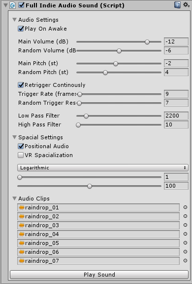

Tammik Audio Toolkit
Unity 3D audio tool (late 2016 - present)

The "Tammik Audio Toolkit" (TAT) marks my first steps in audio programming. As proprietary audio tool for A Shell In The Pit Audio it is driving the sound experiences for our clients – from mobile over consoles to Virtual Reality.
TAT is based upon the Unity 3D audio engine, yet extends it's functionality immensely supporting a wide variety of audio behaviour – seamless looping, cross-fading, sample & pitch randomisation, layering/blending, sequencing, 3D spacialication for VR, real time parameter control, voice- & instance-management, and many more.
A lot of features are tightly integrated with fundamental Unity systems. The tool takes full control of Unity's mixer and effects. On top of that each games requirements are being addressed be it via custom solutions for 3D positioning / 2D panning or distance attenuation. Each game has it's own challenges and the tool is in a continuous evolution.
Titles using TAT include Splitter Critters (iOS, Android & desktop), The American Dream (Vive, Oculus & PSVR) and Universe Sandbox 2 (mobile, desktop & VR).
Full-Indie Audio Tool
Unity 3D audio tool (November 2016)
{kind=link}
A free and open source audio implementation tool using prefabs to define audio behaviour. This tool was created in preparation of the Global Game Jam 2017 in Vancouver. It is available for download on GitHub.
It exposes volume (in deciBell) and pitch control (in semi tones), looping or trigger-rate options, filtering and positional settings. Sound prefab can play multiple sounds at once and randomizes between samples avoiding repetition.
© (2016) Christopher Tammik
available on GitHub